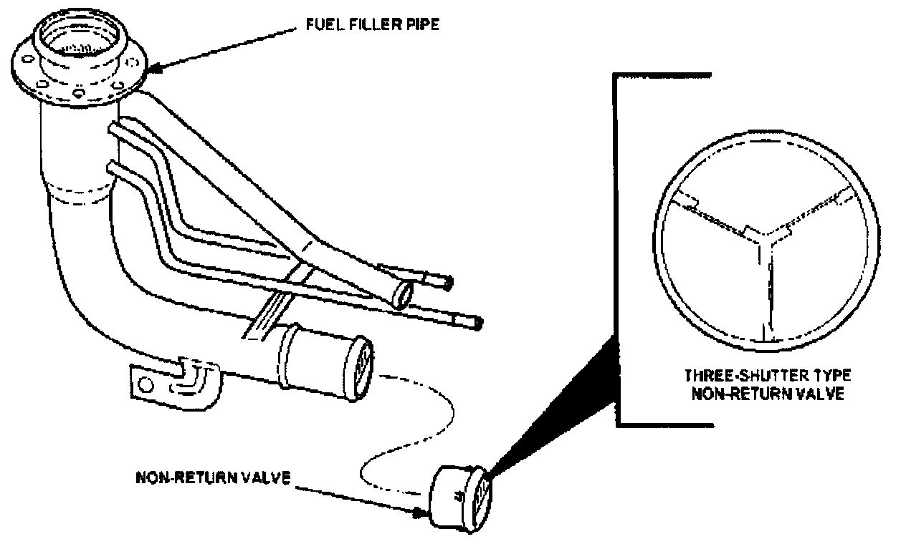
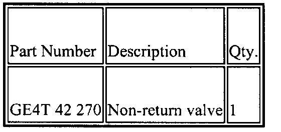
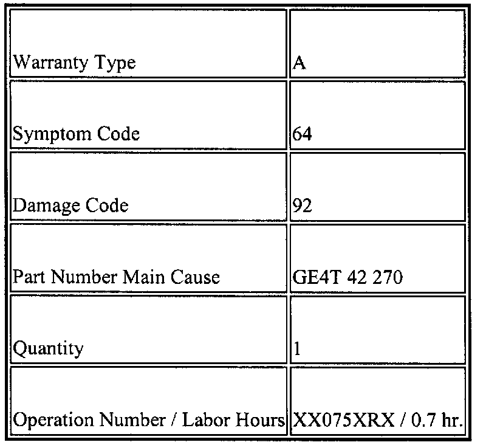

Fuel System - Vehicle Hard to Refuel
M01-008/991999 Miata - HARD TO REFUEL
APPLICABLE MODELS
All 1999 Miata with VINs lower than JM1 NB353* X0 123496.
DESCRIPTION
Excessive amount of time is required when refueling the vehicle due to pump nozzle repeatedly shutting off. This may be caused by the non-return valve (one-shutter type) becoming stuck in the closed position. A modified (three-shutter type) non-return valve is now available to resolve this concern.
Customers having this concern should have their vehicle repaired using the following procedure.
REPAIR PROCEDURE
1. Verify customer concern.

2. Replace the non-return valve with the modified part according to the Workshop Manual (section 01-14).
3. Verify repair.

PARTS INFORMATION

WARRANTY INFORMATION
This information applies to verified customer complaints on vehicles covered under normal warranty. Refer to the SRT microfiche for warranty term information.

Disclaimer